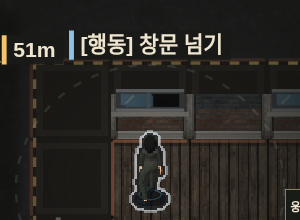
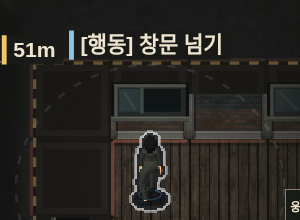
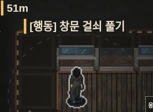
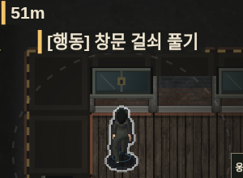
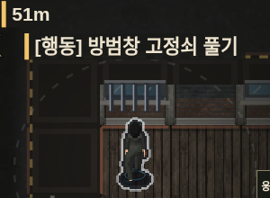
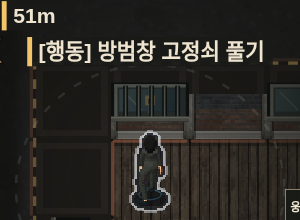

동작과 창문 · v107
게임 실행 · 점검 기록
이전 v106 수정 v107
수정 v107
같은 맵·시작 위치·배치를 사용한 실제 게임 화면입니다. 영상은 브라우저에서 동작 시간을 일정하게 진행해 24fps로 촬영했습니다. 사진은 창문 통과의 50%, 2층 진입의 82% 지점입니다. 매달림·운반은 동작 부분을 잘라 확대했습니다. 이미지를 누르면 전체 화면이 열립니다.
창문 상태 비교
열림 · 이전
열림 · 수정
잠김 · 이전
잠김 · 수정
방범창 · 이전
방범창 · 수정